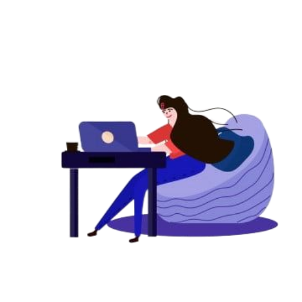

Hey this is Meghana ,i'm a student currently pursuing my B.Tech 3rd year in Gayatri Vidya Parishad College of Engineering ,Vizag,in Computer Science and Data Science .A intern in bharath web development.I'm enthusiastic about exploring new computer languages and some of them are HTML and CSS ,cuz i'm always interested in making websites.I'm passionate about making websites with new innovative ideas

My Journey
School (Sri Chaitanya)
Completed my 10th standard in srichaitanya school in my home town rajam,srikakulam,andhra pradesh.
Intermediate(sri chaitanya)
completed my 11th and 12th standard in srichaitanya junior college in my vishakapatnam,andhra pradesh.
B.Tech(gayatri vidya parishad college of engineering)
I'm currently pursuing BTech 3rd year in the branch of computer science and Data science.